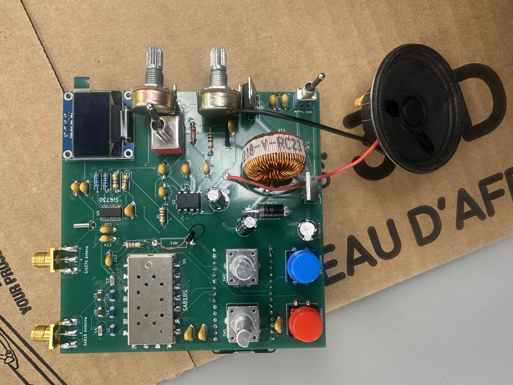

Electrical Engineering student focused on intelligent energy infrastructure, power systems, RF systems, optimization, telemetry, and engineering software development.
Electrical Engineering student with interests in computational power systems, signal processing, RF systems, optimization, and engineering analytics.

Designed and built a custom PCB-based RF communication system integrating transceiver functionality, FM radio capability, display integration, audio output, and embedded controls.
Built an embedded FM radio system with Bluetooth audio playback, station selection, RTC integration, and display control.
Built power-system modeling tools involving Y-bus construction, feeder modeling, and numerical power-flow concepts.
Planned RF instrumentation project focused on collecting, processing, and analyzing real radio-frequency measurements.
Interested in computational power systems, optimization methods, signal processing, telemetry systems, intelligent energy infrastructure, and engineering applications involving large-scale data.
GitHub: markiemarc12
Email: johansenbrandon3@gmail.com